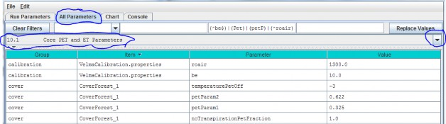
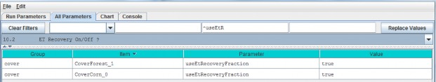
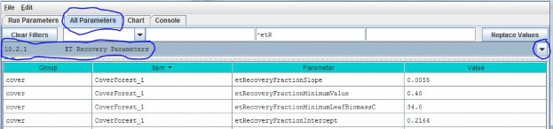
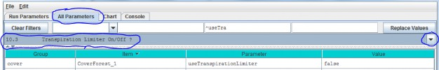
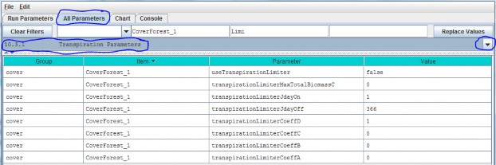

Transpiration
Evapotranspiration (ET) is the sum of evaporation and plant transpiration. ET equations and parameters in VELMAversion 2.0 are the same as for version 1.0 (see Abdelnour et al. 2011), except for the following:
- The ET recovery function has been replaced with a new subroutine that models post- disturbance changes in ETbased on leaf biomass dynamics.
- A new subroutine models age-related declines in transpiration for forest systems. See details in subsections10.1 - 10.3.1.
10.1 - Core PET and ET Parameters
Core parameters for calibrating VELMA's PET and ET submodels can be found by selecting section 10.1 from the AllParameters drop-down menu:

Parameter Definitions
(see Abdelnour et al. 2011 for equations and additional explanation):
| Parameter Name | Parameter Description |
|---|---|
| roair | Air density in g/m^3 |
| be | ET coefficient used in the logistic equation that computes ET from PET |
| temperaturePetOff | PET is only active when air temperature is > than this value (in degrees C) |
| petParam1 | First term of PET Hamon Equation: petParam1 * petParam2 * gS.roair * (esat / 1000.0f) |
| petParam2 | Second term of PET Hamon Equation: petParam1 * petParam2 * gS.roair * (esat / 1000.0f) |
| notranspirationPetFraction | The fraction of PET available outside of this a cover species/type's growing season range [0.0 - 1.0]. |
10.2 - ET Recovery On/Off ?
Select section 10.2 from the All Parameters drop-down menu to turn the ET recovery function on (true) or off(false):

10.2.1 - ET Recovery Parameters
Select section 10.2.1 from the All Parameters drop-down menu to specify ET recovery parameter values for eachcover type in your watershed (just one cover shown below):

Parameter Definitions
| Parameter Name | Parameter Description |
|---|---|
| etRecoverFractionSlope | The value of the ET recovery fraction's linear equation slope component. |
| etRecoverFractionMinimumValue | ET recovery fraction is forced to this value when the current leaf biomass is less than the value specified for etRecoveryFractionLeafBiomassMinimum orwhen the calculated ET recovery fraction is less than zero. |
| etRecoverFractionMinimumLeafBiomassC | minimum amount of leaf biomass (in gC/m^2) required to compute an ET recovery fraction. Whenever leaf biomass is less than this amount the ET recoveryfraction is forced to the etRecoverFractionMinimumValue. |
| etRecoverFractionIntercept | value of the ET recovery fraction's linear equation intercept component. |
Calibration Notes
We have prepared a DRAFT Excel spreadsheet that you may choose to use to calibrate ET recovery parameters for your site.
Filename: VELMA 2.0_ET Recovery Calibrator_HJA_12-1-13.xlsx
Folder location: VELMA Model\Supporting Documents\Excel Calibration Files
10.3 - Transpiration Limiter On/Off?
Studies in the Pacific Northwest have shown that young forests transpire significantly more water than oldforests (McDowell et al. 2002; Moore et al. 2004). VELMA version 2.0 has a new subroutine to address age-relateddeclines in transpiration by forest vegetation.
Select section 10.3 from the All Parameters drop-down menu to turn the Transpiration Limiter subroutine on (true)or off (false):

Parameter definition:
| Parameter Name | Parameter Description |
|---|---|
| useTranspirationLimiter | When set false (default value) the transpiration limiter fraction value is forced to 1.0 (Which effectively means "No age-related limitation" i.e. the limiter is OFF.)When set true the transpiration limiter fraction is computed based on its jday and coefficients settings. |
See section 10.4 for parameters and calibration information.
References
McDowell, N. G., Phillips, N., Lunch, C., Bond, B. J., & Ryan, M. G. (2002). An investigation of hydrauliclimitation and compensation in large, old Douglas-fir trees. Tree Physiology, 22(11), 763-774.
Moore, G. W., Bond, B. J., Jones, J. A., Phillips, N., & Meinzer, F. C. (2004). Structural and compositionalcontrols on transpiration in 40-and 450-year-old riparian forests in western Oregon, USA. Tree physiology,24(5), 481-491.
10.3.1 - Transpiration Parameters
Select section 10.3.1 from the All Parameters drop-down menu to specify parameter values for the TranspirationLimiter subroutine used to describe age-related declines in transpiration by forest vegetation:

Parameter Definitions
| Parameter Name | Parameter Description |
|---|---|
| useTranspirationLimiter | When set false (default value) the transpiration limiter fraction value is forced to 1.0 (Which effectively means "No limiting at all" i.e. the limiteris OFF.) When set true the transpiration limiter fraction is computed based on its jday and coefficientssettings. |
| transpirationLimiterMaxTotalBiomassC | Upper limit of total biomass amount (in gC/m^2) for transpiration limiter fraction computation. When total biomass amount in a cell exceeds this max value thetranspiration limiter faction value is forced to the transpirationLimiterCoeffD parameter's value. |
| transpirationLimiterJdayOn | Transpiration reduction occurs on the Julian day specified by this "on" parameter and continues on every day of the year up to and including the day specified by the paired "off" parameter. I.e. transpiration reduction occurs in the range[transpirationLimiterJdayOn transpirationLimiterJdayOff] |
| transpirationLimiterJdayOff | Transpiration reduction occurs on the Julian day specified by this "off" parameter and does not occur for any days of the year remaining after it. I.e. transpiration reduction occurs in the range [transpirationLimiterJdayOn transpirationLimiterJdayOff] |
| transpirationLimiterCoeffA | The A coefficient in the Transpiration Limiter Fraction equation: A / (1 + B * exp(C * totalBiomassC)) + D |
| transpirationLimiterCoeffB | The B coefficient in the Transpiration Limiter Fraction equation: A / (1 + B * exp(C * totalBiomassC)) + D |
| transpirationLimiterCoeffC | The C coefficient in the Transpiration Limiter Fraction equation: A / (1 + B * exp(C * totalBiomassC)) + D |
| transpirationLimiterCoeffD | The D coefficient in the Transpiration Limiter Fraction equation: A / (1 + B * exp(C * totalBiomassC)) + D |
Calibration Notes
The transpiration limiter subroutine is experimental and we do not recommend using it at this time.